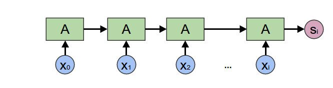

Problem Statement:
Train an LSTM to solve the XOR problem: that is, given a sequence of bits, determine its parity. The LSTM should consume the sequence, one bit at a time, and then output the correct answer at the sequence’s end.
Test the two approaches below:
- Generate a dataset of random 100,000 binary strings of length 50. Train the LSTM; what performance do you get?
- Generate a dataset of random 100,000 binary strings, where the length of each string is independently and randomly chosen between 1 and 50. Train the LSTM. Does it succeed? What explains the difference?
LSTM networks have been used with success on sequential data.
A great introduction to recurrent neural networks, specifically LSTM (long short-term memory) networks can be found reading through Chris Olah's explanation on understanding LSTMs.
In the problem statement it specifies "The LSTM should consume the sequence, one but at a time …"
As we are considering sequential data it seems that an LSTM would be a good architectural choice in training a neural network to learn the parity of a sequence of bits.
- parity.
-
The parity of a sequence checks the number of 1-bits. In our case we will consider odd-parity, the function returning 1 if the number of bits in a sequence is odd, 0 if even.
- parity function.
-
The function takes in a sequence of bits and returns the parity bit of the
-
sequence. Returning 1 if the sequence contains an odd amount of 1-bits,
-
0 otherwise.
The parity function can be written as
where \(\oplus\) is the XOR function defined by the table below
| A | B | A \(\oplus\) B |
|---|---|---|
| 0 | 0 | 0 |
| 0 | 1 | 1 |
| 1 | 0 | 1 |
| 1 | 1 | 0 |
import operator
import functools
import random
def foldl(func, acc, xs):
return functools.reduce(func, xs, acc)
foldl(operator.add, 0, [1,2,3,4,5,6,7,8,9,10])
>> 55
#!python
# parity check, function = xor, acc = 0 sequece, 0s and 1s
random.seed(1)
print("bitstring | parity ")
print("-"*25)
for _ in range(1):
seq = [random.randint(0,1) for _ in range(12)]
print(f"{''.join(str(b) for b in seq)} | {foldl(operator.xor, 0, seq)}")
>> bitstring | parity
>> -------------------------
>> 001011110010 | 0
random.seed(1)
def trace_xor(a, b):
"""
shows the intermediate steps of
xor function on
a sequence
"""
result = operator.xor(a, b)
print(f"{a} XOR {b} = {result}")
return result
print(foldl(trace_xor, 0, [1,0,0,1,1]))
>> 0 XOR 1 = 1
>> 1 XOR 0 = 1
>> 1 XOR 0 = 1
>> 1 XOR 1 = 0
>> 0 XOR 1 = 1
>> 1
The middle column corresponds to our bit string we want to check. Notice the left column is the previous result from XOR(a, b). As a consequence, the final result only depends on xor of the previously returned result. In our example the last bit of our sequence being 1 and the previously returned XOR result, 0.
Experiment
- Generating parity data
- Training and evaluating LSTM
import torch
import torch.nn as nn
import torch.utils.data as data
from torch.utils.data import DataLoader
device = 'cuda' if torch.cuda.is_available() else 'cpu'
# Data
TRAINING_SIZE = 100000
VALIDATION_SIZE = 10000
BIT_LEN = 50
VARIABLE_LEN = True
# Model Parameters
INPUT_SIZE = 1
HIDDEN_SIZE = 2
NUM_LAYERS = 1
# Training Parameters
BATCH_SIZE = 8
EPOCHS = 8
LEARNING_RATE = 0.01 # DEFAULT ADAM 0.001
THRESHOLD = 0.0001
class XOR(data.Dataset):
""" GENERATE XOR DATA """
def __init__(self, sample_size=VALIDATION_SIZE, bit_len=BIT_LEN, variable=False):
self.bit_len = bit_len
self.sample_size = sample_size
self.variable = VARIABLE_LEN
self.features, self.labels = self.generate_data(sample_size, bit_len)
def __getitem__(self, index):
return self.features[index, :], self.labels[index]
def __len__(self):
return len(self.features)
def generate_data(self, sample_size, seq_length=BIT_LEN):
bits = torch.randint(2, size=(sample_size, seq_length, 1)).float()
if self.variable:
# we generate random integers and pad the bits with zeros
# to mimic variable bit string lengths
# padding with zeros as they do not provide information
# TODO: vectorize instead of loop?
pad = torch.randint(seq_length, size=(sample_size, ))
for idx, p in enumerate(pad):
bits[idx, p:] = 0.
bitsum = bits.cumsum(axis=1)
# if bitsum[i] odd: -> True
# else: False
parity = (bitsum % 2 != 0).float()
return bits, parity
class XORLSTM(nn.Module):
def __init__(self, input_size, hidden_size, num_layers):
super(XORLSTM, self).__init__()
self.hidden_size = hidden_size
self.num_layers = num_layers
self.lstm = nn.LSTM(input_size, hidden_size, num_layers, batch_first=True)
self.fc = nn.Linear(hidden_size, 1)
self.activation = nn.Sigmoid()
def forward(self, x, lengths=True):
h0 = torch.zeros(self.num_layers, x.size(0), self.hidden_size).to(device)
c0 = torch.zeros(self.num_layers, x.size(0), self.hidden_size).to(device)
# Forward propagate LSTM
out_lstm, _ = self.lstm(x, (h0, c0))
out = self.fc(out_lstm)
predictions = self.activation(out)
return predictions
model = XORLSTM(INPUT_SIZE, HIDDEN_SIZE, NUM_LAYERS).to(device)
criterion = nn.BCELoss()
optimizer = torch.optim.Adam(model.parameters(), lr=LEARNING_RATE)
# train
def train():
model.train()
train_loader = DataLoader(
XOR(TRAINING_SIZE, BIT_LEN, VARIABLE_LEN),
batch_size=BATCH_SIZE
)
total_step = len(train_loader)
print("Training...\n")
print('-'*60)
for epoch in range(1, EPOCHS+1):
for step, (features, labels) in enumerate(train_loader):
features, labels = features.to(device), labels.to(device)
# Forward pass
outputs = model(features)
loss = criterion(outputs, labels)
# Backward and optimize
optimizer.zero_grad()
loss.backward()
optimizer.step()
accuracy = ((outputs > 0.5) == (labels > 0.5)).type(torch.FloatTensor).mean()
if (step+1) % 250 == 0:
print ('Epoch [{}/{}], Step [{}/{}], Loss: {:.4f}, Accuracy: {:.3f}'
.format(epoch, EPOCHS,
step+1, total_step,
loss.item(), accuracy))
print('-'*60)
if abs(accuracy - 1.0) < THRESHOLD:
print("EARLY STOPPING")
return
if step+1 == total_step:
valid_accuracy = validate(model)
print("validation accuracy: {:.4f}".format(valid_accuracy))
print('-'*60)
if abs(valid_accuracy - 1.0) < THRESHOLD:
print("EARLY STOPPING")
return
def validate(model):
valid_loader = DataLoader(
XOR(VALIDATION_SIZE, BIT_LEN, VARIABLE_LEN),
batch_size=BATCH_SIZE
)
model.eval()
correct = 0.
total = 0.
for features, labels in valid_loader:
features, labels = features.to(device), labels.to(device)
with torch.no_grad():
outputs = model(features)
total += labels.size(0)*labels.size(1)
correct += ((outputs > 0.5) == (labels > 0.5)).sum().item()
return correct / total
train()
>> Training...
>>
>> ------------------------------------------------------------
>> Epoch [1/8], Step [250/12500], Loss: 0.7235, Accuracy: 0.375
>> ------------------------------------------------------------
>> Epoch [1/8], Step [500/12500], Loss: 0.6935, Accuracy: 0.460
>> ------------------------------------------------------------
>> Epoch [1/8], Step [750/12500], Loss: 0.6767, Accuracy: 0.618
>> ------------------------------------------------------------
>> Epoch [1/8], Step [1000/12500], Loss: 0.7001, Accuracy: 0.368
>> ------------------------------------------------------------
>> Epoch [1/8], Step [1250/12500], Loss: 0.4462, Accuracy: 0.873
>> ------------------------------------------------------------
>> Epoch [1/8], Step [1500/12500], Loss: 0.0427, Accuracy: 1.000
>> ------------------------------------------------------------
>> EARLY STOPPING
Model Summary
In viewing neural network architectures as function composition we see recurrent neural networks can be viewed as a reduce operation on an input sequence.

Considering one bit at a time and remembering the previous partial result in a recurrent or multi-step architecture reduces the problem of learning k-bit parity to the simple one of learning just 2-bit parity.
The Architecture
Below is a diagram showing the architecture of the LSTM.

model
>> XORLSTM(
>> (lstm): LSTM(1, 2, batch_first=True)
>> (fc): Linear(in_features=2, out_features=1, bias=True)
>> (activation): Sigmoid()
>> )
model(XOR(1, 2).generate_data(1)[0]).size()
>> torch.Size([1, 50, 1])
sampleX.reshape(-1)
>> tensor([1., 0., 0., 1., 0., 1., 0., 0., 0., 1., 1., 1., 0., 0., 1., 0., 0., 0.,
>> 0., 1., 0., 0., 1., 0., 0., 0., 1., 0., 1., 0., 0., 1., 0., 0., 1., 0.,
>> 0., 1., 0., 1., 1., 0., 1., 0., 1., 1., 1., 0., 0., 1.])
(model(sampleX) > 0.5).float().reshape(-1) # cumulative parity of sample bit
>> tensor([1., 1., 1., 0., 0., 1., 1., 1., 1., 0., 1., 0., 0., 0., 1., 1., 1., 1.,
>> 1., 0., 0., 0., 1., 1., 1., 1., 0., 0., 1., 1., 1., 0., 0., 0., 1., 1.,
>> 1., 0., 0., 1., 0., 0., 1., 1., 0., 1., 0., 0., 0., 1.])
sampleY.reshape(-1)
>> tensor([1., 1., 1., 0., 0., 1., 1., 1., 1., 0., 1., 0., 0., 0., 1., 1., 1., 1.,
>> 1., 0., 0., 0., 1., 1., 1., 1., 0., 0., 1., 1., 1., 0., 0., 0., 1., 1.,
>> 1., 0., 0., 1., 0., 0., 1., 1., 0., 1., 0., 0., 0., 1.])